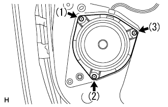

|
The clip is mixed and the front door trim board RH is assembled on the door panel.
In the screw, attach the front door trim board RH with the front door inside handle RH.
Installation of front speaker ASSY No.1 (RH) |
| 1. Front speaker ASSY No.1 (RH) Installation |
|  |
With three rivets, attach the front speaker Assy No.1 RH.
| 2. Front door trim board SUB-ASSY RH installation |
|
The clip is mixed and the front door trim board RH is assembled on the door panel.
In the screw, attach the front door trim board RH with the front door inside handle RH.
| 3. Installation of door pull handle |
Attach the door -pull handle with a screw.
| 4. Multiplex network Master Switch assessed |
In the screw, attach multi -plattsunetsu to work Mastasutsutsuchi to the front door armrest base panel UPR RH.
Connect the connector.
 |
Match the claws and attach the multi -plattskusune to work Mastasutsutsy to the front door trim board RH.
| 5. Front door roux frame bracket garnish RH installation |
 |
The claws and clips are used, and the front door roux frame braketto garanitsui RH is attached.